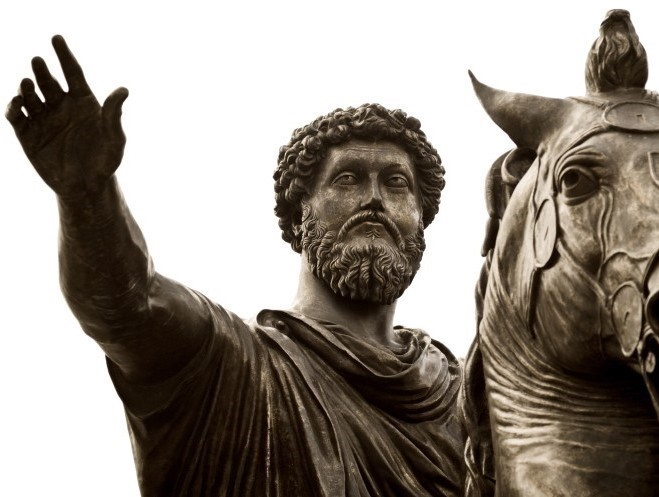
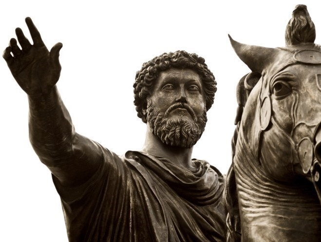

Living Stoicism

How I discovered Stoicism
I struggled mentally for a large part of my life. The idea of working on my mindset never even crossed my mind - I didn't consider it something I could improve. That changed the day I stumbled across a video by Ryan Holiday, one of the most influential modern Stoics. In it, he calmly laid out some of the core principles of Stoicism and recommended Meditations by Marcus Aurelius.
I picked up the book, and almost immediately began trying to apply the lessons. Of course, I couldn't master Stoicism overnight - but it didn't take long for something to click. I realized just how negative and reactive my thoughts were. I saw how much energy I spent worrying about things completely outside my control. And I realized that I could be so much happier - so much better -
if I committed to practicing the Stoic mindset.
This website is an expression of my appreciation for Stoicism, and I hope it reaches those who need it most.
My Favourite Stoic Quotes
Click Arrows For Quotes
At my lowest point since adopting a Stoic mindset, these fundamental ideas have helped me maintain mental clarity and stillness. Throughout 2024, I've faced countless setbacks - especially a brutal series of injuries - yet every time, I reminded myself: I can either view this as wasted time and sink into despair, or I can treat this pain as an opportunity to grow; to build resilience.
As the first quote in this list (and my personal favorite) reminds me: “The impediment to action advances action. What stands in the way becomes the way.”
Stoicism doesn't eliminate pain, but it can eliminate suffering - reshaping how we face pain and turning obstacles into fuel for inner strength.
Why I believe in it
Stoicism aims to respect all, to be kind to all, and to become the best possible version of yourself. It's a philosophy built on cultivating a powerful mind - not to overpower others, but to grow alongside them.
I believe in Stoicism not only because it helps me, but because it helps those around me. It teaches you to be a better listener, more respectful, less judgmental… and I could go on. It reshapes how we interact with the world - with others and with ourselves.
For this reason I hope it finds others who are on the same path - those who are searching to become better. Because Stoicism thrives in people who are always looking to grow.